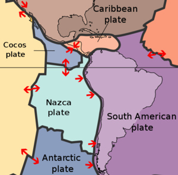

The Nazca Plate, named after the Nazca region of southern Peru, is an oceanic tectonic plate in the eastern Pacific Ocean basin off the west coast of South America.

The eastward motion of the Nazca Plate is one of the fastest among all tectonic plates. Its subduction beneath the South American Plate has produced massive earthquakes, including the largest ever recorded, the May 22, 1960 earthquake near Valdivia, magnitude 9.6.
The application shows a map of the Nazca Plate zone, with markers over the location (latitude, longitude) of each registered earthquake.
The color and size of the circular markers represents the magnitude of the earthquake. Marker color goes from blue for magnitudes 6 to 7, green in the middle (magnitudes 7 to 8), and orange/red for the higher magnitudes (8 to 10).
Two sliders allows the user to select a range of years and a range of magnitudes to filter the earthquakes shown on the map.
Clicking on any marker displays basic info of the associated earthquake.
The application is available in shinyapps.io.
The source code is available in this GitHub repo.
The data was downloaded from the USGS Search Site, choosing dates from 1900-01-01 to 2015-12-31, in a rectangular zone of coordinates (North: -13, South: -52, East: -60, West: -77), which corresponds to the subduction zone of the Nazca plate.
The data looks like this:
## time latitude longitude depth mag place
## 1 1906-08-17 -32.400 -71.400 35 8.2 Valparaiso, Chile
## 2 1913-08-06 -16.469 -73.823 25 7.7 near the coast of southern Peru
## 3 1914-01-30 -36.292 -75.057 15 7.6 off the coast of Bio-Bio, Chile
## 4 1918-05-20 -29.292 -71.857 20 6.8 offshore Coquimbo, Chile
## 5 1918-12-04 -26.538 -70.608 40 7.8 Atacama, Chile
## 6 1919-03-02 -43.109 -71.695 15 7.2 Chubut, Argentina
The largest earthquake on earth (magn. = 9.6) occured near the city of Valdivia (Bio-Bio region, Chile), shown here together with other massive earthquakes:
## time latitude longitude depth mag place
## 113 1960-05-22 -38.143 -73.407 25.0 9.6 Bio-Bio, Chile
## 484 2010-02-27 -36.122 -72.898 22.9 8.8 offshore Bio-Bio, Chile
## 112 1960-05-22 -38.061 -73.039 25.0 8.6 Araucania, Chile
The average is 5.3 earthquakes per year in this zone:
NqkData$year <- as.integer(substr(NqkData$time,1,4))
round(nrow(NqkData) / (max(NqkData$year) - min(NqkData$year) + 1), 1)
## [1] 5.3
Large earthquakes (magnitude >= 7.5) occurs every 3.8 +/- 2.4 years
q <- NqkData[NqkData$mag >= 7.5,]
q1 <- q[!duplicated(q$year),c("year")]
dif <- q1[-1] - q1[-length(q1)]
paste(round(mean(dif),1), "+/-", round(sd(dif),1))
## [1] "3.8 +/- 2.4"
This simple application can be used for educational purposes. It shows graphically the effects of the movement of tectonic plates, through maybe the most dramatic of them: earthquakes.
With minor changes, the application can be modified to show similar maps and facts from other known earthquakes zones, like Japan or San Andres, using the right choice of data available at the USGS site.
So, if you find this application or its source code useful for this or other purposes, please feel free to copy, modify or use it at your will.